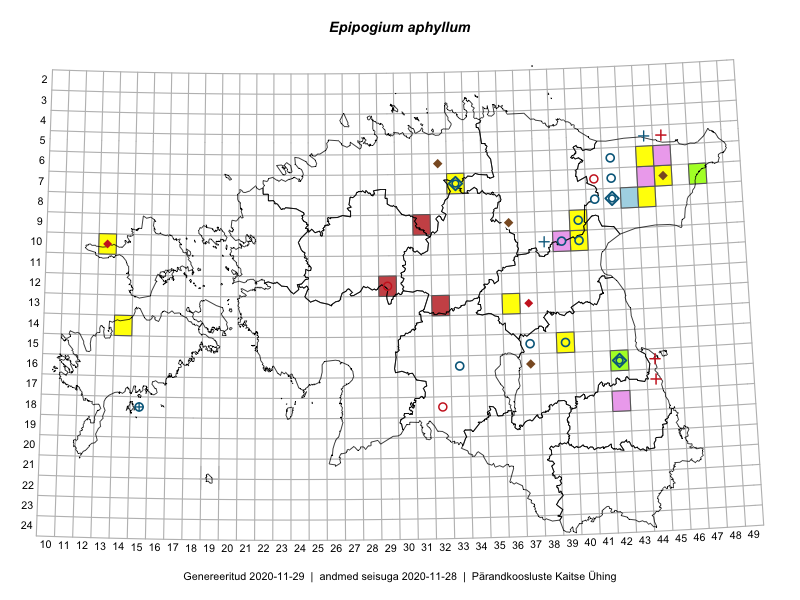

Epipogium aphyllum
Uuendatud: 2016-12-07
Kaardile koondatud taksonid: Epipogium aphyllum (F.W.Schmidt) Sw.

Kaart põhineb 5 vaatlusel. Taime on leitud 3 ruudust.
| Ruut | Vaatleja(d) | Vaatlusaeg | Kirje tüüp | Viide andmebaasikirjele |
|---|---|---|---|---|
| 07-47 | Peedu Saar, Thea Kull | 2014-07-24 | ruut/ala | vaata PlutoFis |
| 07-47 | Thea Kull, Peedu Saar | 2014-07-24 | punkt | vaata PlutoFis |
| 10-17 | Eeva-Maria Jeletsky, Tarmo Niitla | 2016-07-14 | ruut/ala | vaata PlutoFis |
| 14-14 | Sirje Azarov, Mari Reitalu | 2016-07-26 | punkt | vaata PlutoFis |
| 14-14 | Mari Reitalu, Sirje Azarov | 2016-07-26 | ruut/ala | vaata PlutoFis |